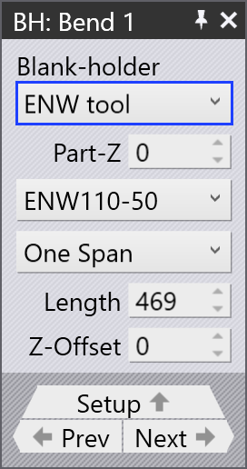

Aihiotelineiden muokkaus
Automaattisen työkalujen valinnan aikana TecZone Fold luo aihioteline-yhdistelmän siten, että mahdollisimman monta taivutusta voidaan käsitellä alkuperäisellä yhdistelmällä. Aihiotelineiden yhdistelmää voidaan myös säätää manuaalisesti erilaisten osan geometrioiden ja taivutusvaatimusten mukaiseksi.
Aihiotelinepaneeli (BH)
Napsauta ylempää aihiotelinettä avataksesi BH-paneelin. Tämä paneeli mahdollistaa aihiotelineen ominaisuuksien muokkaamisen (valitulle taivutukselle), mukaan lukien aihioteline-yhdistelmän vaihtamisen, ENW-työkalun käyttämisen, ENW-työkalun tyypin vaihtamisen jne.
Napsauta Blank-holder-pudotusvalikkoa vaihtaaksesi aihiotelinetyypin:


-
ENW tool - Tätä vaihtoehtoa käytetään valitsemaan ENW-työkalun tyyppi tietylle taivutukselle. Tieto näytetään taivutusnavigaattorin solussa.
-
Core composition - Alkuperäinen aihioteline-yhdistelmä, joka on vakioaihioteline ilman lisätyökaluja.
-
Tool Change (FZ23) - Ohjelmoi uusi aihioteline-yhdistelmä käyttäen FZ23-toimintoa.
Part-Z: Käytä tätä vaihtoehtoa siirtääksesi osaa Z-akselin suuntaan. Tämä on hyödyllinen osan sijainnin säätämiseen koneessa taivutusviivan suuntaisesti.
Length: Muokkaa aihiotelineen pituutta. TecZone luo automaattisesti aihioteline-yhdistelmän vastaamaan määritettyä pituusarvoa.
Z-offset: Tätä vaihtoehtoa käytetään siirtämään ENW-työkalua Z-akselin suuntaan.
Horns: Valitse mitkä sarvikappaleet sisällytetään aihioteline-yhdistelmään. Voit valita vasemman, oikean tai molemmat sarvet.
Offset: Tämä on etäisyys koneen keskipisteen ja aihiotelineen keskipisteen välillä.

Split: Raon pituus runkoyhdistelmän oikean reunan ja ensimmäisen käyttämättömän kappaleen (harmaana) välillä aihiotelineen oikealla puolella.
Advanced
Horn Retract: Valitse None poistaaksesi sarven vetämisen käytöstä. Sarven vetäminen voidaan ottaa käyttöön valitsemalla joko vasen, oikea tai molemmat sarvet.
Split / Pack ja Extra Split / Pack
Näitä vaihtoehtoja voidaan käyttää kappaleiden jakamiseen ja pakkaamiseen aihioteline-yhdistelmässä. Split-toimintoa käytetään raon luomiseen työkalujen välille, kun taas Pack-toimintoa käytetään raon sulkemiseen työkalujen väliltä.
Split/Pack ja Extra Split/Pack -vaihtoehtoja käytetään säätämään rakoja työkalujen välillä.
Raon luomiseksi työkalut siirretään ulospäin; niiden pakkaamiseksi ne siirretään sisäänpäin.
| Vain yksi tai kaksi jakoa jokaiselle aihiotelineen puolelle on tuettuna (esimerkiksi ei ole mahdollista, että vasemmalla on kolme jakoa ja oikealla yksi). Enintään neljä jakoa yhteensä on mahdollista: kaksi kummallakin puolella. |
| Vakioaihiotelineen leveys on 160 mm ja sarvillisen aihiotelineen leveys on 199 mm. |
Split / Pack
Left or Right: Valitse puoli (vasen tai oikea) jako/pakkaus-toiminnalle.
-
Valitsemalla 0 aktivoidaan Split / Pack runkoyhdistelmän päässä.
-
Valitsemalla negatiivinen arvo (esimerkiksi -160) lisätään rako runkoyhdistelmän sisälle.
-
Valitsemalla positiivinen arvo (esimerkiksi +199) lisätään uusi kappale runkoyhdistelmän päähän.
Left or Right gap: Muokkaa vakioraon määrää valitulle aihiotelineen vasemmalle/oikealle kappaleelle.
Extra Split / Pack
Left1 or Right1: Valitse vakiokappale, jonka jälkeen ylimääräinen rako lisätään. Yleensä on kahdeksan vakiokappaletta saatavilla, pois lukien sarvi-aihioteline.
Left Gap1 or Right Gap1:
Muokkaa ylimääräisen raon määrää vakiokappaleiden jälkeen.
|
Jos ylimääräinen rako on otettu täällä käyttöön, vakiorakoa Split / Pack-kohdassa ei voi enää muokata. Tämä vaihtoehto ei ole käytettävissä aihiotelinetyypille Tool Change (FZ23). |